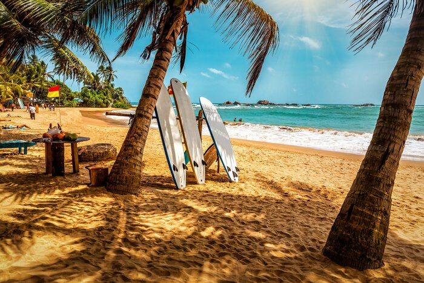
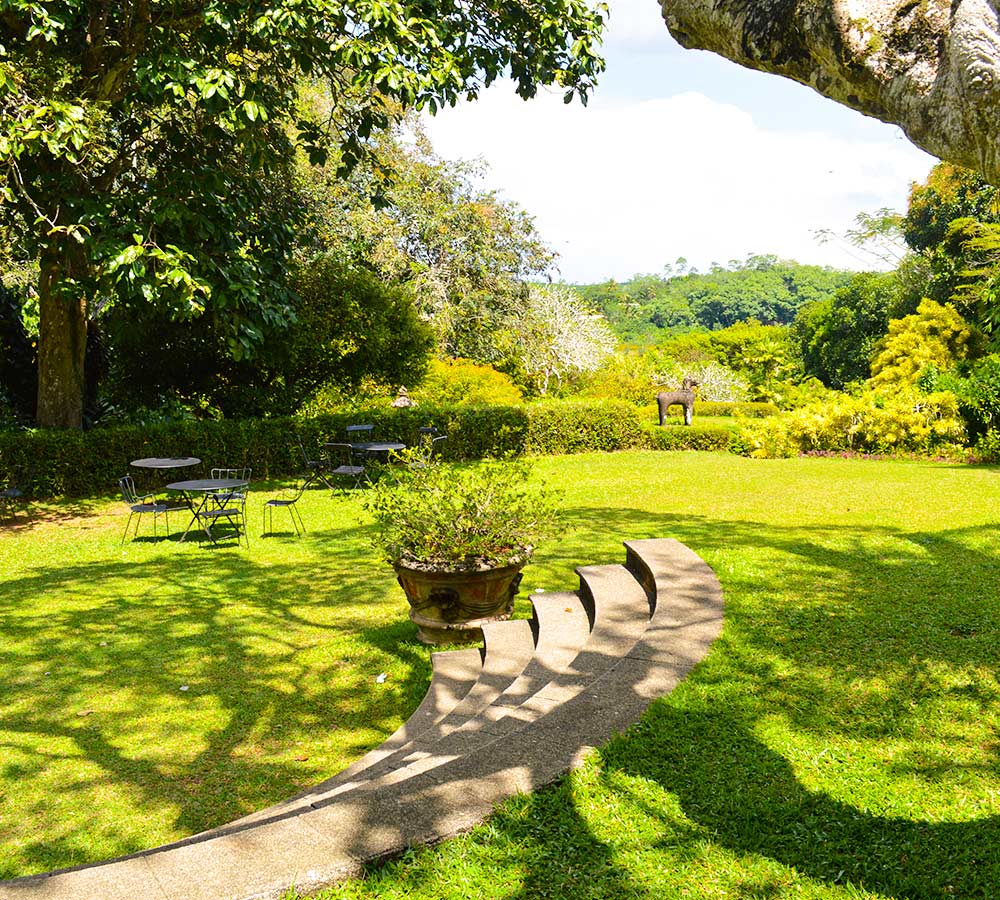

Key Attractions

Bentota Beach stretches along golden sands and calm waters, perfect for swimming, sunbathing, and relaxing in the warm Indian Ocean breeze.

The Bentota River Safari offers mangrove explorations where travelers encounter birds, monitor lizards, and breathtaking lagoon scenery.

Brief Garden, created by Bevis Bawa, features enchanting pathways, sculptures, and lush artistic landscaping that inspire all who visit.

Jet-skiing, banana boating, and windsurfing make Bentota a top adventure hub for travelers seeking fun on sparkling coastal waters.